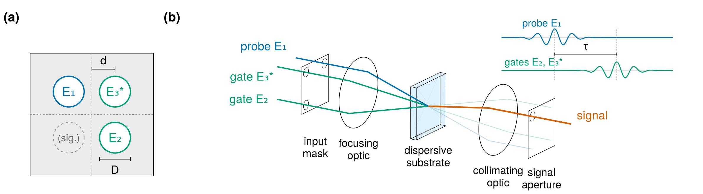

Trace Simulation
ModelPNPS generates synthetic TG-FROG (Transient Grating FROG) spectrograms by full spatially-resolved nonlinear propagation through a thin solid medium. Given an analytic input pulse and an experimental geometry, it produces the $I(\omega, \tau)$ trace a real apparatus would record — the ground truth for benchmarking and developing retrieval algorithms.
The propagation is performed by Luna.jl using its angular-spectrum free-space propagator and instantaneous Kerr χ⁽³⁾ response. A production run needs either a GPU or a SLURM cluster: full delay scans at realistic grid sizes (Nω ≈ 4096, N ≈ 256–1024) take tens of minutes to hours per delay point on CPUs, and well under a minute on a data-centre GPU (see Running on a GPU).
The complete specification of this instrument model — including bounds on every approximation the simulation makes, all at or below the $10^{-4}$ level on the trace — is given in the reference paper (see The paper), which used ModelPNPS to generate the ground-truth traces for its retrieval validation study.
Physical model

The geometry ModelPNPS models, from the reference paper: (a) the four-hole input mask, with hole diameter D and hole-centre offset d from the symmetry axes; (b) the optical chain — the three beamlets are crossed by a focusing optic inside the thin dispersive substrate, and the diffracted signal leaves through the background-free fourth direction and passes the signal aperture. Inset: the scanned delay τ of the gate pair relative to the probe.
Three input beams (two gates g1, g2 and a delayed test pulse t) are crossed inside a thin nonlinear substrate (e.g. UV fused silica). Their interference produces a transient refractive-index grating; the test pulse diffracts off this grating into the fourth corner of the boxcar via degenerate four-wave mixing,
\[ \mathbf{k}_\text{signal} = \mathbf{k}_{g2} - \mathbf{k}_{g1} + \mathbf{k}_t.\]
The boxcar layout (looking along +z):
test (-x, +y) | gate 1 (+x, +y)
--------------------------------------
signal (-x, -y) | gate 2 (+x, -y)Scanning the test-pulse delay τ and spectrally resolving the diffracted signal yields a 2-D I(ω, τ) spectrogram — the TG-FROG trace.
Because the beams are propagated rather than idealised, the trace contains the instrument effects a real measurement contains. Dispersion in the substrate reshapes the pulse as it generates signal. The crossed beams reach each point of the focus with different relative arrival times, which smears the trace along the delay axis with a width set by the mask geometry and wavelength alone, $\sigma \propto (d/D)\,\lambda_0/c$. And the apertures act as frequency-dependent spatial filters, on the input beamlets (so the pulse that actually gates the interaction is the mask-vignetted beamlet, saved as Iω_beamlet) and on the collected signal. The reference paper (see The paper) derives each effect and measures its size on this simulation.
The simulation pipeline is:
- Build a temporal/spectral grid (Luna
EnvGrid) and a spatial grid (LunaFreeGrid). - Set up material dispersion (Sellmeier
n(λ)) and Kerr χ⁽³⁾ via Luna. - Construct the three input beamlets in k-space at the substrate.
- For each delay τᵢ:
- Apply
exp(-iωτᵢ)to the test beam. - Coherently superpose all three beamlets.
- Propagate through the substrate via
Luna.run(adaptive RK4(5) split-step), optionally saving snapshots at several thicknesses in the one pass (see Many material thicknesses from one run). - Apply the signal-extraction window in k-space.
- Extract two spectral diagnostics: a re-imaged on-axis spectrum and a fully-integrated spectrum.
- Apply
- Save all outputs to a single HDF5 file via
Luna.Output.scansave.
Two beam models
Two AbstractInputBeam subtypes are provided:
HE11Beam— the master experimental model. The HE₁₁ mode of a hollow capillary fibre is collimated by a long lens, clipped by a four-hole apodised mask in the collimated beam, then focused into the substrate. Each hole selects one of the four boxcar arms. Chromatic vignetting is captured exactly because the mask plane ↔ k-space mapping is wavelength-dependent.GaussianBeam— a simplified Gaussian-beam model that places three Gaussian beams directly at the correct k-space angles (no fibre mode, no physical mask). Useful as a sanity-check baseline.
Three signal-extraction window types
PhysicalMaskWindow— the master experimental signal extraction: a frequency-dependent apodised hole in the mask plane. Apodisation choices::hard,:supergauss(default order 16),:tanh. Chromatic vignetting is captured exactly.PlanckWindow— a smooth, frequency-independent radial Planck taper in k-space. No chromatic vignetting; baseline for the Gaussian model.PlanckOmegaWindow— a smooth, frequency-dependent Planck taper that mimics the chromatic vignetting of the physical mask while keeping the smooth-edge advantage. Used to isolate the two effects (smooth-edge vs ω-scaling) within the Gaussian model.
When build_setup is given a vector of windows, every per-delay output is computed for each window in turn and saved with a suffix. The standard two-window pattern [PlanckWindow, PlanckOmegaWindow] produces output keys Iω_win, Iω_win_reimaged, Iω_win_ωdep, Iω_win_ωdep_reimaged.
Self-diffraction geometry
The default layout is the four-hole boxcar above, selected by geometry = :tg. geometry = :sd builds a self-diffraction geometry instead: two collinear holes rather than four, on one axis, with the signal at
\[ \mathbf{k}_\text{signal} = 2\mathbf{k}_E - \mathbf{k}_G,\]
where E is the probe and G the gate. With the two holes at $\pm s/2$ ($s$ = mask_spacing + mask_diam, centre to centre) the signal appears at $-3s/2$ — one further slot out, on the probe's side.
setup = build_setup(;
λ0 = 260e-9, τfwhm = 2e-15, energy = 0.2e-6,
thickness = 40e-6, material = :SiO2,
mask_diam = 1.0e-3, mask_spacing = 0.5e-3,
beam = HE11Beam(125e-6, 5.0, 0.1),
window = PhysicalMaskWindow(; holex = -1.5 * 1.5e-3, holey = 0.0,
holediam = 1.0e-3, zmask = 0.1),
geometry = :sd,
)The layout is symmetric about the axis — probe at $-s/2$, gate at $+s/2$ — rather than putting the probe on axis and centring the signal. The centred variant needs a 27 % narrower grid, but cuts the two beams from very different parts of the HE₁₁ profile, giving them unequal energy; the SD signal is $E^2G^*$, so that asymmetry does not cancel. Which beam carries the delay follows the same convention as TG: the gate appears once, carries the conjugation, and takes the delay.
geometry selects both the beamlet layout and the k-space bound used by optimal_spatial_grid — the SD signal position bounds the nonlinear k-content directly, so unlike the boxcar no extra factor of three is applied. The signal position is written to the output metadata as sd_signal_x, along with sd_separation_cc, so a collection window can be placed from the file.
geometry = :sd is implemented for HE11Beam only, and build_setup throws an ArgumentError for any other beam model — the Gaussian builder always places three beams at the boxcar corners and would otherwise silently produce a TG field on an SD-sized grid. An unknown geometry is likewise rejected rather than treated as :tg.
The windowed outputs (Iω_win, Iω_win_reimaged) are correct for SD provided the window is placed at the SD signal position. The Iω_full diagnostic and signal_quadrant_norm are boxcar-specific: both integrate the $k_x < 0, k_y < 0$ quadrant, which is not where the SD signal sits. Treat them as not yet meaningful in this geometry.
Worked example: mask scheme
using ModelPNPS
import Luna.Scans
beam = HE11Beam(125e-6, 5.0, 0.1) # fibre radius, f_coll, f_foc
window = PhysicalMaskWindow(holex=-0.75e-3, holey=-0.75e-3,
holediam=0.5e-3, zmask=0.1,
apod=:supergauss, apod_param=16)
setup = build_setup(; λ0=260e-9, τfwhm=2e-15, energy=0.2e-6,
thickness=10e-6, material=:SiO2,
mask_diam=1.0e-3, mask_spacing=0.5e-3,
beam, window)
τ = collect(range(-10e-15, 10e-15, 80))
exec = Scans.SlurmExec(@__FILE__, length(τ); memory="18G", arraymode=:batch)
run_scan(setup, τ; scan_name="my_mask_run", exec)See the [tgfrog_window_series.jl example][slurm-example] for a full production-scale script: the same beam and mask scheme, a ladder of substrate thicknesses from one propagation (zsave), and a series of collection-window diameters recorded simultaneously. The [tgfrog_window_series_gpu.jl example][gpu-example] runs the same measurement on a single GPU.
[slurm-example]: https://github.com/LupoLab/ModelPNPS.jl/blob/main/examples/tgfrogwindowseries.jl [gpu-example]: https://github.com/LupoLab/ModelPNPS.jl/blob/main/examples/tgfrogwindowseries_gpu.jl
Worked example: Gaussian-beam scheme
using ModelPNPS
import Luna.Scans
f_foc, mask_diam, mask_spacing = 0.1, 1.0e-3, 0.5e-3
λ0 = 260e-9
w0 = λ0 * f_foc / (π * mask_diam/2)
d_hole = mask_spacing/2 + mask_diam/2
Δk = 2π/λ0 * sin(d_hole / f_foc)
beam = GaussianBeam(w0, f_foc)
windows = [PlanckWindow(kxc=-Δk, kyc=-Δk, kwidth=2.5/w0, pad=1.25),
PlanckOmegaWindow(xc=-d_hole, yc=-d_hole,
holediam=mask_diam/2, f_foc=f_foc, pad=1.25)]
setup = build_setup(; λ0, τfwhm=2e-15, energy=0.2e-6,
thickness=10e-6, material=:SiO2,
mask_diam, mask_spacing,
beam, window=windows)
τ = collect(range(-10e-15, 10e-15, 80))
exec = Scans.SlurmExec(@__FILE__, length(τ); memory="18G", arraymode=:batch)
run_scan(setup, τ; scan_name="my_gaussian_run", exec)Spatial grid sizing
optimal_spatial_grid computes a (R, N) pair such that the spatial grid
- contains at least
n_airyAiry patterns from a single mask hole at the longest wavelengthλmax(real-space containment), - resolves the Airy pattern at the shortest wavelength
λminwith at leastpts_per_lobereal-space samples across the central lobe, - has k-space half-extent exceeding the largest FWM nonlinear k-vector at
λmin, with asafetyheadroom factor.
N is rounded up to the next power of 2 for FFT efficiency. For typical DUV parameters (f_foc=0.1 m, mask_diam=1 mm, mask_spacing=0.5 mm, λmin=160 nm, λmax=500 nm) this produces R ≈ 3 mm and N in the range 256–1024.
The default safety=1.5 is conservative; reducing it produces a smaller grid (and faster simulation) at the cost of potential FWM aliasing.
Loading scan output
run_scan writes one HDF5 file per delay scan via Luna.Output.scansave. load_simulated_scan reads that raw file, extracts the chosen signal window and propagation z-slice, fftshifts the ω-dependent arrays into natural (centred) order, and returns the trace and reference spectra as a NamedTuple ready for inspection, plotting, or custom post-processing (to pull out several material thicknesses at once, see Many material thicknesses from one run):
using ModelPNPS
nt = load_simulated_scan("my_mask_run_collected.h5";
window_key="Iω_win", z_index=:end)
# nt.ω, nt.τ, nt.trace (Nω × Nτ), nt.Iω, nt.It, ...To retrieve the pulse from a scan, hand the collected file to Croak, the companion retrieval package: it reads these files directly, including the /grid/delay_convention marker that fixes the delay-axis orientation, and compares its result against the stored beamlet ground truth.
Many material thicknesses from one run
A delay scan propagates the field to the full substrate thickness, but the trace at any shorter thickness can be recovered from the same run at essentially no extra cost. The propagation is a forward-marching integrator with z-independent dynamics (constant density, per-unit-length dispersion), so the field captured at an intermediate z is identical to a dedicated run of thickness z. Saving an intermediate snapshot costs only one dense-output interpolation — the expensive integration is unchanged. A single 40 µm run therefore yields the 1, 10, 20 and 40 µm traces together.
Snapshots are selected with the zsave keyword of run_scan (forwarded to simulate_delay_point):
# Explicit material thicknesses [m]. `thickness` (= zmax) is appended
# automatically if absent, so the final slice is always the full-propagation
# output. Here thickness=40e-6 in build_setup.
run_scan(setup, τ; scan_name="my_run", exec,
zsave=[1e-6, 10e-6, 20e-6, 40e-6])
# Or an integer for a uniform grid of that many slices over [0, thickness]:
run_scan(setup, τ; scan_name="my_run", exec, zsave=21)Each per-delay trace dataset (Iω_win, Iω_win_reimaged, Iω_full, and any windowed variants) is then stored with shape (Nω, nz, Nτ), and the realized z positions are written once to /grid/zsave. The default (zsave=2, equivalently the legacy nz=2) keeps the entrance and exit slices only, so existing scripts are unchanged.
load_simulated_scan exposes the saved thicknesses:
# A specific thickness — picks the nearest saved z slice (needs /grid/zsave):
d10 = load_simulated_scan("my_run_collected.h5"; z_thickness=10e-6)
# d10.trace is (Nω × Nτ); d10.zsave lists all saved z positions [m].
# Every saved thickness at once — trace becomes (Nω × nz × Nτ):
allz = load_simulated_scan("my_run_collected.h5"; z_index=:all)
for (k, z) in enumerate(allz.zsave)
trace_k = allz.trace[:, k, :] # (Nω × Nτ) at thickness z
endz_index=:end (the default) still returns the full-thickness slice as a 2-D (Nω, Nτ) trace, and an integer z_index selects a slice by index. Files written before zsave existed simply have no /grid/zsave and load exactly as before (omitting zsave/z_thickness).
Cost is the key advantage: adding snapshots leaves the compute time unchanged. The only overhead is peak memory — the in-memory 4-D field (Nω, Nky, Nkx, nz) is held one slice per saved z — which is comfortable for up to ~20 thicknesses at realistic grid sizes. (A streaming reduction that decouples memory from nz entirely is a possible future extension for hundreds of slices.)
Diagnostics: the retrievable pulse and the efficiency curve
Two diagnostics are saved on every run to make the simulated trace a clean retrieval benchmark.
The retrievable pulse — Iω_beamlet / It_beamlet
Iω_beamlet is the spatially-integrated spectrum of one input beamlet after the mask — i.e. the input pulse as chromatically vignetted by a single mask hole. It_beamlet is its time-domain intensity (the mask is a real amplitude filter, so the beamlet inherits the input pulse's spectral phase). This is the "ground-truth" pulse a retrieval should recover, and is the right thing to plot against a reconstructed |E(t)|² and |E(ω)|² — not the un-vignetted input It/Iω. Both are saved under /grid and returned by load_simulated_scan; Ito_beamlet is the 8× oversampled version sharing the To grid.
The exact collection efficiency — Iω_full
The TG-FROG frequency marginal $M(\omega) = \sum_\tau I(\omega,\tau)$ does not match Iω_beamlet, even after the nonlinear $\omega^n$ correction. It is important to separate the two very different reasons why, because only one of them is an efficiency that should be divided out:
Nonlinear generation scaling (an efficiency) — the χ⁽³⁾ polarization → radiated-field conversion carries explicit ω factors; the $(\omega+\omega_0)^n$ power law is only an approximation to it.
The marginal is a gate convolution, not the spectrum (not an efficiency). Even for a perfect, unvignetted, single pulse, a TG-FROG marginal is intrinsically
\[ M(\omega) = |\tilde{E}(\omega)|^2 \;\circledast\; |\tilde{g}(\omega)|^2, \qquad g(t) = |E(t)|^2,\]
the pulse spectrum convolved with the transient-grating gate spectrum (a baseband function), which smears and broadens it. All three beamlets are the same vignetted pulse (the three holes are symmetric and the HE₁₁ mode is radial), so this is fully determined by the single pulse
Iω_beamlet— it is real FROG physics that the retrieval forward model reproduces, and must not be divided out. Vignetting only sets which pulse (Iω_beamlet) enters the convolution.Collection vignetting (an efficiency) — the signal beam is collected through the (chromatic) signal window, multiplying the marginal by a per-ω collection efficiency. Under good imaging (output mask conjugate to the input mask) this is small;
Iω_fulllets you confirm exactly how small.
For the Gaussian-beam scheme the efficiency factors (1) and (3) are mild (no input mask; a broad, smooth Planck window), which is why its marginal lines up with the spectrum after the $\omega^2$ correction once the gate convolution is accounted for. For the physical-mask scheme factor (3) and the gate convolution of the vignetted spectrum are both significant.
To remove factor 3 exactly — with no power-law approximation — every run also saves Iω_full: the signal beam collected in full. The propagated field holds the three strong pump beamlets (at the g1/g2/test boxcar corners) plus the weak FWM signal at the fourth corner, so integrating over all of k-space would just be dominated by the pumps. Instead Iω_full integrates |E|² over the signal's k-space quadrant only (the signal sits alone at kx<0, ky<0 while the three pumps occupy the other quadrants), capturing the whole signal lobe with no aperture vignetting and excluding the pumps. The ratio
\[ \eta_\text{collect}(\omega, \tau) = \frac{I_\text{win}(\omega,\tau)} {I_\text{full}(\omega,\tau)}\]
is then the exact per-(ω, τ) collection / chromatic-vignetting efficiency of the signal aperture. Divide it out (or use Iω_full directly) to obtain a trace free of collection vignetting; the per-ω efficiency curve is the delay-marginal ratio $\sum_\tau I_\text{win} / \sum_\tau I_\text{full}$. (This assumes the boxcar beams are well separated, so pump tails leaking into the signal quadrant are negligible vs. the signal — true for any working TG-FROG geometry.) Load it with:
nt_win = load_simulated_scan("run_collected.h5"; window_key="Iω_win")
nt_full = load_simulated_scan("run_collected.h5"; window_key="Iω_full")
η_collect = vec(sum(nt_win.trace, dims=2) ./ sum(nt_full.trace, dims=2))Together, Iω_full removes collection vignetting (factor 3) exactly, while Iω_beamlet/It_beamlet give the actual vignetted pulse under test — so once the nonlinear $\omega^n$ scaling (factor 1) is divided out, the only remaining "offset" is the gate convolution (factor 2), which is genuine FROG physics the retrieval forward model reproduces rather than an artifact to correct.
Computational cost
Per delay point, the propagation cost is dominated by the 3-D FFTs in the split-step solver, so it scales with the transverse grid N and the number of frequency bins.
On a GPU the whole propagation and extraction path runs on the device, and one delay point at the production shape takes 42 s on an NVIDIA H200 against 1.9 h on two CPU cores — a factor of about 160. A 200-point scan is then a couple of hours on one card rather than a fortnight. This is the recommended way to run a campaign; see Running on a GPU for the keyword, the memory budget and the practical setup.
On CPUs, a delay point at Nω ≈ 4096 and N ≈ 256–1024 takes tens of minutes to hours on a single core, so a scan needs one task per delay. Use Scans.SlurmExec with arraymode = :batch to dispatch the whole scan as one SLURM array job.
Either way, memory_budget tells you what a configuration will need before you launch it, and zsave gets a whole ladder of substrate thicknesses out of one scan — see Many material thicknesses from one run.
Testability
Every primitive (build_he11_kspace, build_gaussian_kspace, apply_tilt, apply_delay, makemask, build_window, extract_signal_spectra) is independently unit-testable. The test file test/tracesimulation_test.jl exercises each in isolation, plus a simulate_delay_point(...; skip_propagation=true) mode that bypasses Luna.run to test signal extraction without paying the propagation cost. A single tiny end-to-end smoke test runs Luna.run on a 32×32 grid in a few seconds — this is the only place the test suite proves the integration boundary works. The full pipeline is validated by the example scripts on SLURM, not by the unit tests.
API reference
Full docstrings for every type and function named above — grouped as beam types, signal-window types, setup/simulation/scan, primitives and scan-loading — are collected on the API Reference page.